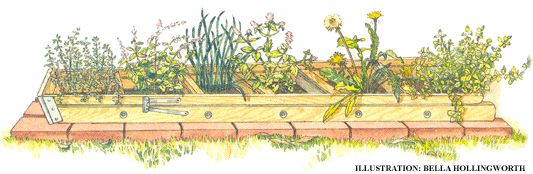
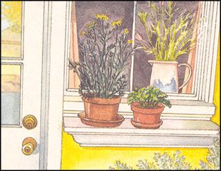

Issue # 178 - February/March 2000
Everything you need to know....to grow.
Most herbs will grow in containers. The soil should consist of equal parts potting soil, coarse sand and peat moss, all of which can be obtained in hardware or garden supply stores. The pots preferably should be placed in a window that faces south, so as to assure four to five hours of sunlight each day, and they will need to be watered about once a week. The window temperature should be between 50°F and 75°F and the humidity around 50%. Try to avoid placing plants either near a radiator or a window with open drafts, as these conditions may radically alter the optimum temperature. While plants such as rosemary, bay and chives tolerate cold conditions,. most others can be harmed by extremes of temperature in either direction.
During winter months it is best to water the plants with lukewarm water rather than the cold faucet run; frigid temperatures can shock a plant's system.
Most herbs are fairly resistant to pests, though a number are susceptible to aphids, whiteflies, spider mites and caterpillars. Ironically, some herbalists insist that there is more of a pest problem when growing indoors than outdoors. If faced with any pesky interlopers, don't reach for the insecticide. A far better and gentler approach is to hold the hijacked plants under a gentle spray of water. You can also make up a pest-fighter spray by taking advantage of the natural pest-repellent qualities of certain herbs. Pick some leaves from,. for instance, spearmint or rue. Pour boiling water over them and steep for 15 minutes. When cool, strain the mixture through a cheesecloth and pour into a spray bottle.
If you decide to move your operation outside, keep in mind that less is more... at first anyway. One ambition-checking and space-saving device that has been used by hundreds of beginning herbalists is a simple stepladder. Lay a ten-foot ladder horizontally on the ground and use the rungs as divider marks to separate the various herbs. One such "ladder garden" I know of features sections of thyme, basil, sage, parsley, garden burner, summer savory, garlic, tarragon and spearmint.
The wooden ladder frame can be supported by a couple of layers of bricks to allow for soil depth (soil requirements vary from herb to herb). And since the natural barriers (ladder rungs) are already present, it's a piece of cake to vary the soil composition from one section to the next.
Most culinary herbs - especially basil, dill, chives and sage - produce more and better foliage when they are frequently trimmed back. If you make drastic cuts to a plant, however, remember to mix some compost or fish emulsion in with your next watering. This will help to spur new growth.
Some folks have discovered that a small herb garden just outside the kitchen door is both useful and convenient. It need not be the product of any extensive landscaping, just a system of informal plantings where space permits. You may want to take some steps early on to assure the little herb garden will be attractive year-round. The best way to do this is to mingle evergreen herbs such as lavender and lavender cotton amidst the basic culinary herbs. That way your little garden area never has that "died out" or dormant look.
An herb garden begins with site selection and soil preparation. If at all possible, you want to locate the garden in an area that receives at least five hours of sunlight each day. If not, your plants will grow slowly. Some herbs such as borage, chervil, mint, parsley and sweet woodruff do tolerate partial shade, but the rest are pretty demanding of the sun.
Good drainage is the next most important consideration. Planting on a natural slope can help, but if none are available it's a snap to create your own gentle mini-hillside.
In preparing the soil, dig deep and aerate well. If the soil has a high percentage of clay, lighten it with some peat moss and improve its drainage qualities by adding some coarse sand. You will more than likely need to add some organic matter such as compost, well-rotted manure or leaf mold. Soil pH should be slightly alkaline (approximately 7.5). Check the soil with a testing kit, which you can usually buy from a gardening center. If it tends to be acidic (6.5 or below), add some lime.
The most economical way to grow herbs is from seed, but this, of course, also takes the most time. For slow-growing herbs such as thyme, marjoram, parsley. mint and chives, you'll want to start seeds in early fall and cultivate indoors throughout the winter. Faster-growing herbs should be planted no more than four weeks before you expect to put them outdoors.
Some herbs - including tarragon and oregano - are best started as cuttings from established plants. Look to buy small plants from a nursery or herbal farm and cultivate them with care until you are ready to transfer them to the outdoor garden.
Once you have built up a collection of thriving herbs, extend your garden by propagating new plants by root division, layering or stem cuttings. In root division, any plants that grow from numerous stems can be divided by raising the root clump out of the soil and breaking it apart from the rest of the plant. Replant and cultivate with the proper soil nourishment. In layering, plants with woody, low-lying side branches can be propagated by making a slanted incision on the underside of a low, flexible branch. Anchor the branch in the soil and keep well-watered. When there is an established root and growth begins over the top of it, cut the newly rooted part from the branch and transplant.
For stem cuttings, cut a healthy flowerless shoot and strip off its lower leaves. Dip the cut end into a rooting powder, pot in soil and press a 50:50 sand and vermiculite mixture around it to help keep the soil moist. Cover the pot with a plastic bag supported with sticks or a wire frame.
Herbs generally need less attention than the average vegetable or flower. It is a good idea to cultivate around them occasionally to aerate the soil and remove competing weeds, but that's about the extent of the care they'll ask of you.
Most herbs can survive minor summer droughts and, with the exception of mint, basil and chives, require little extra watering. Overall, herbs generally require only about half the water you would give to other flowering plants and vegetables.
Again, most herbs will give potential pests a run for their money, but a few are susceptible to the aforementioned crawly critters. Doing battle with commercial sprays will not only alter an herb's natural flavor forever, but it could compromise an herb's healing qualities. An excellent all-purpose outdoor herbal spray can be formulated as follows:
Take 10 peeled, sliced garlic cloves and add 1 teaspoon of cayenne pepper. Pour 2 cups of boiling water over the top and steep for 15 minutes. Strain through a cheesecloth and add 2 tablespoons of dishwashing liquid. Pour into a spray bottle and apply each day until the infestation is gone. The spray can be stored in the refrigerator for a week before you'll need to make up a new batch.
|
 |
 |
|